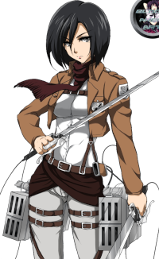

Mikasa Ackerman (ミカサ・アッカーマン Mikasa Akkāman ? ) é um dos dois deuteragonistas da série, junto com Armin Arlert . Após seus pais serem assassinados por traficantes de pessoas , Mikasa foi resgatada por Eren Yeager e viveu com ele e seus pais, Grisha e Carla , antes da queda da Muralha Maria . Ela é a última descendente do clã Shogun que permaneceu na Ilha Paradis , sendo assim relacionada à família Azumabito , e detém um poder político significativo em Hizuru . [ 12 ] Embora desejasse apenas viver uma vida pacífica, Mikasa ingressou no exército , onde é considerada a melhor soldado do 104º Corpo de Treinamento . Mais tarde, ela se alista no Corpo de Investigação para seguir e proteger Eren, tornando-se um de seus maiores trunfos. Atualmente, ela serve como oficial (上官 Jōkan ? ) no Corpo. texto completo